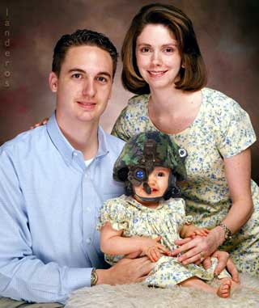

|

Reinstate the Draft: A Modest Proposal
Make the war a personal danger to the average young American and the ranks of protesters for peace will multiply exponentially.
- - - - - - - - - -
by Robert Casserly
 In the relatively short span of my 30-odd years, my country has gone to war with so many nations that I cannot remember the names of all of them. I polled a dozen classmates, co-workers and friends, and none of them could do so either. In the relatively short span of my 30-odd years, my country has gone to war with so many nations that I cannot remember the names of all of them. I polled a dozen classmates, co-workers and friends, and none of them could do so either.
If you consider "real" wars, meaning all-out military conflicts, and also "involvements", conflicts in which the United States merely financed combatants and/or gave them the weapons they needed to kill each other, then the list includes: Vietnam, Lebanon, Haiti, Panama, EL Salvador, Nicaragua, Colombia, Yugoslavia/Kosovo, Somalia, Afghanistan Part One -- Give Taliban Weapons, Afghanistan Part Two -- Kill Taliban, Iraq-Iran War I -- Give Saddam Weapons, Iraq-Kuwait Part Two -- Spank Saddam, and finally Iraq Part Three -- JR's Revenge.
This is just the biggies. Space permitting, we could delve into a much longer list, including such forgettable triumphs as Grenada. Ah, the Reagan and Papa Bush '80s were the glory days for unabashed militarism, no doubt about it.
In fact, since 1945, only one U.S. President (out of 12) has managed to keep U.S. troops out of war for the duration of his tenure, and he had plenty of opportunity and motive to use Might is Right. He knew he would become immensely more popular if he sent U.S. troops in to kill certain foreign leader who dared to challenge America to a fight. Almost everyone, including members of his own administration, were begging him to do what Congress wanted, what Mr. Gallup said the majority of U.S. citizens wanted, what the Dow Jones Industrial wanted, and what the media was screaming for -- to send in GI Joe to kick some bad-guy butt.
Why did this President resist, ultimately shattering any chance he had at re-election? Because he had the radical notion that conflicts must as far as possible be resolved through mediation and international cooperation based on international law. Do you know which President I am talking about? Something to research if you do not, but I'll give you a hint: he recently won the Nobel Peace Prize.
Except for a single four-year hiatus from war, for half a century those who dare to anger America have soon found the apocalyptic black angel of a high-altitude bomber in their air space. War is so ordinary to us that specific details of our victories soon fade from memory, and peaceful Presidents are strangely unique.
And here are again, deja vu all over again, back to the Papa Bush years and the U.S. vs. Iraq TV mini-series on CNN. For those young'uns out in Skreedland who missed it, let me sum it up for you.
They'll tell you in history class that it had a complicated plot, and admit I simplify it, but basically we charged over to Iraq all blood and guts for glory with a billion dollars worth of payload to kill Saddam for invading Kuwait's oil fields, and suddenly, when the Iraqis were running toward us en mass with arms in the air and white flags waving and we were seriously worried about how to feed all the captured soldiers, we stopped. Just parked the tanks, landed the planes and made the aircraft carriers sail around in little circles. Papa Bush went on TV, told everyone how he had successfully spanked Saddam into being a good boy from now on, and the U.S. charged off the field like a football team who had just won 72-0, game over. Little did viewers suspect then that it was only halftime.
So now Bush Jr. has rumbled in his Papa's footsteps, and I think there is only one way to stop him from starting ANOTHER war (Syria? Iran? North Korea?) in a long line of wars that will continue unless we stop accepting the logic that war is the only way to resolve international disputes. Reinstate the draft immediately.
Sound far-fetched? Of course it does. The Pentagon has said in no uncertain terms that we do not need a draft and there are no plans to draft anyone. Perhaps that's because Bush Jr. was a draft dodger himself back when he was just a shrub, so he obviously knows better than to bring that issue up for us to think about.
So why reinstate the draft? We should reinstate the draft because of this question, asked over and over in poll after poll: "Do you support the use of force against Iraq?" is the wrong question.
We should reinstate the draft because the question, for most students and millions more across America, would become "Am I willing to die for this?"
We should reinstate the draft because then war would not be an abstract concept far removed from our lives. The real potential cost to ourselves, our families and friends would become very, very real. We would be forced to weigh the righteousness of killing Iraqis (or whomever the Bogeyman of the month is) against the sacrifice of killing Americans, in a personal, meaningful way.
You may think that even if there was a draft, you would not be considered. Let's take a moment here to dispel some common myths about the draft. If you are under 25, you may be surprised.
If the President and Congress authorize a draft, a lottery would be held to determine the order in which inductees would be called. Those turning 20 years old in the calendar year in which the draft is enacted would be the first to receive call-up notices. Those turning 21 would be called next, and on up through the age of 25 until sufficient numbers were inducted. A return to military conscription may legally include an effort to draft women, because most modern military jobs are non-combatant. Current draft guidelines do not provide exemptions for college students as was true of the Vietnam War draft. In a move to make the draft more equitable, college students who are drafted would be permitted to complete the semester of study during which they received their notice. According to the guidelines, college seniors would be permitted to complete their senior year before reporting for duty.
The laws are already on the books, all we have to do it make the lawmakers use them.
Call your Congressman today, and demand a draft card!

|